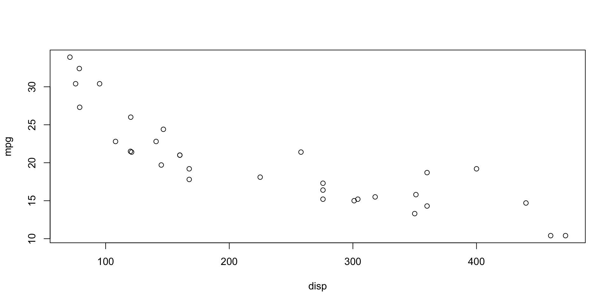
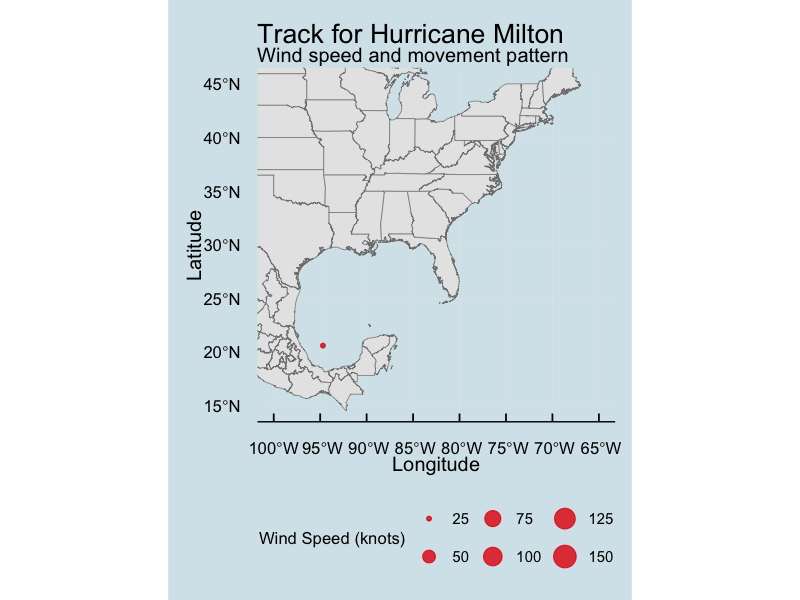
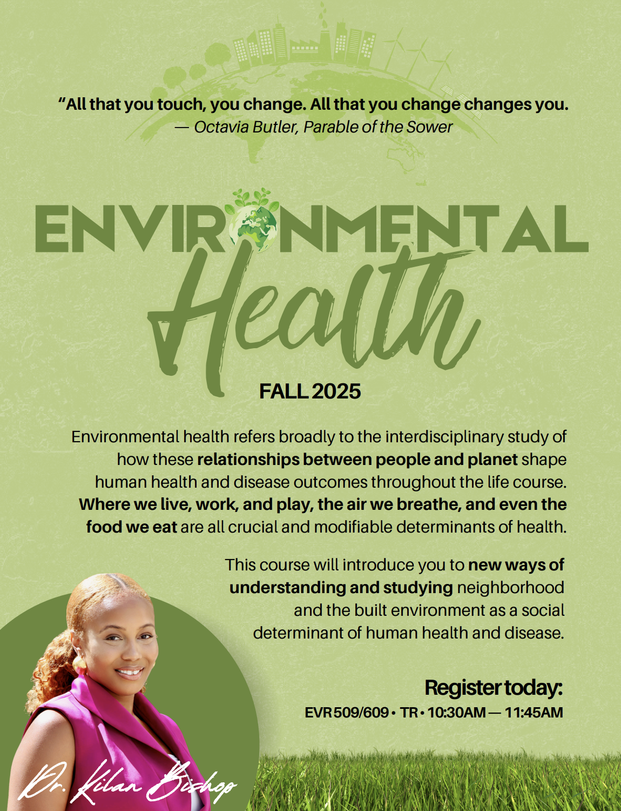
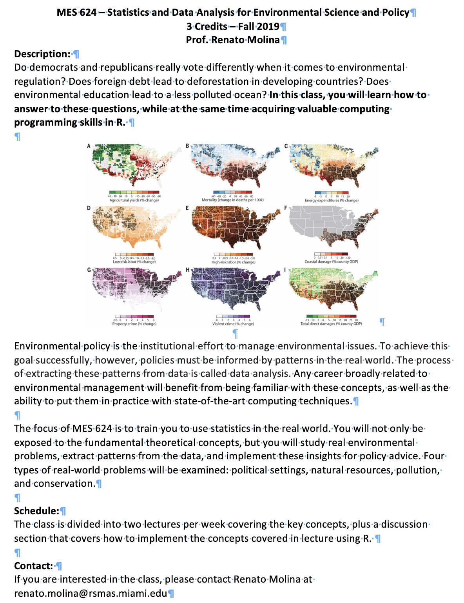
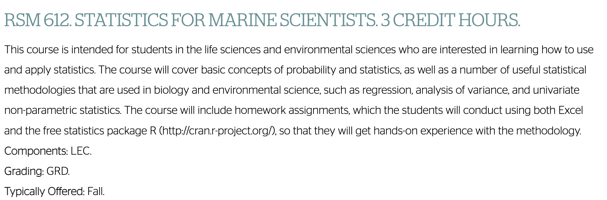
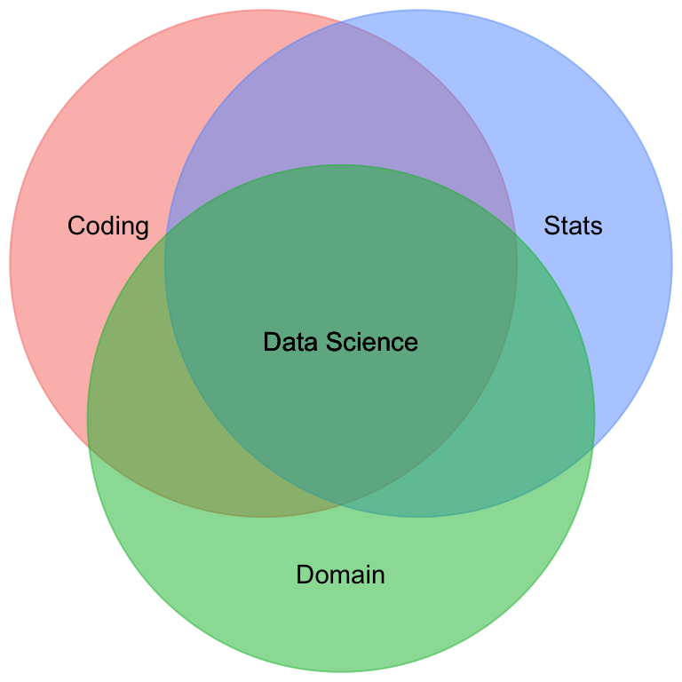

EVR 628- Intro to Environmental Data Science
Week 1: Introduction to Data Science and RStudio IDE
Juan Carlos Villaseñor-Derbez (JC)
Rules of the Game
Course Materials and Content
Course website at: jcvdav.github.io/EVR_628

Grading
- Assistance and participation: 50% - come prepared to participate
- Assignments: 40% (n = 4; 10% each, graded as completed / not completed)
- Final presentation / Data Science portfolio: 10%
The (General) Instruction Format
Lecture sessions (Tuesdays)
- Slide-based delivery of content
- Emphasis on the why of an approach
Hands-on sessions (Thursdays)
- No slides, mostly live coding (you follow along)
- Emphasis on how of an approach
- Expect the first sessions to be rocky as you get up to speed and we standardize our computers
Important
Make sure to complete assigned readings or software installation before class. This will count towards participation.
Interactions with Me
- Office hours: Thursdays 10:15-12:00
- Via email, please include
EVR628in your subject heading
Adaptive Approach
- About three weeks in I will poll you (anonymously)
- Then again 5 weeks in (anonymously)
- Speed things up? Slow things down?
- Are materials relevant to you?
Quick Notes on Using These Slides
- Navigation bar on the left
- Click and zoom on figures
ffor full screen /Escto exit full screenofor overviewefor PDF export mode (can’t see code)?for other help- Navigate with keyboard
- Clicking on links
- Course homepage in footer
Things you will be able to build
You will learn how to access, work with, and visualize many different types of environmental data. For example:
- Access public data repositories and build animated visualizations
- Track fishing vessels form space and build maps of fishing activity
- Develop interactive web-based apps to allow others explore your data
- Create slides with interactive content for effective communication

How will we approach data science?
How we think about projects

- Maybe also add “collect” before “import”
How we’ll learn things
- Organization (Weeks 1, 3, 4, 6)
- Visualization (Weeks 2, 5, 11)
- Reproducibility (Weeks 3, and throughout)
- Data management, transformation, wrangling (Weeks 6-9, 11)
- Spatial data, programming, and other extensions (Week 10 - 14)
- No modelling!
- No communication(-ish)
Side note #1: Other courses
EVR 509/609

EVR 624

RSM612 
About You
- Preferred name
- Year and program
- Interests
Let’s Jump In
Introduction to Data Science
Learning Objectives
By the end of this week, you should be able to:
- Understand the difference between R and RStudio
- Open the RStudio IDE
- Identify the main work areas
- Start a project and a script
- Install R packages
What is Data Science?
Code
library(tidyverse)
library(ggrepel)
tibble(skill = c("Coding", "Stats", "Domain"),
x = c(-1, 1, 0),
y = c(1, 1, -1)) |>
ggplot(aes(x = x, y = y, label = skill, color = skill)) +
geom_point(size = 100, alpha = 0.5) +
geom_text(mapping = aes(label = skill),
color = "black",
nudge_x = c(-2, 2, 0),
nudge_y = c(0.5, 0.5, -2)) +
geom_text(x = 0, y = 0, label = "Data Science",
color = "black") +
coord_equal() +
lims(x = c(-4, 4),
y = c(-4, 4)) +
theme_void() +
theme(legend.position = "none")
This course only covers one bubble: Talking to your computer
Side note #2: A word of caution
- This will feel weird
- It will be painful
BUT!
- It should feel weird
- You are not alone; leverage resources:
- Me
- Your TA
- Each other
- LLMs
- It will be worth it
- If we have to slow things down, we will
Use of LLMs
- You are allowed to use LLMs to troubleshoot your code
- I discourage you from asking your LLM to make the assignments for you
- At the end of this course you should be literate enough in R to do some vibe coding
- Becker et al. (2025):
- 16 experienced software developers
- 246 tasks assigned
- How much time will you save using AI? (-24%)
- AI randomized
- How much do you think you saved using AI? (-20%)
- Actual completion times with AI (+19%!)
Motivation to learn scripting languages
- Reproducibility:Data and code are increasingly required by publishers
- Efficiency and flexibility
- Scale: From small to medium data, it’s all the same
- Responsibility:
- We spend thousands of hours and dollars collecting data
- Objective is to understand how the world works / improve the state of the world
- Bad practices can erode all this away
Our toolkit
- R will be our engine for statistical computing
- RStudio will be our Integrated Development Environment (IDE)
- Git will help us keep track of our code
- GitHub will allow us to share our code with the world
- EVR628tools contains data and a few functions to support the course
You should have already done this
- Download and install the latest version of R (currently v 4.5.x) for MacOS or Windows
- Download and install the latest version of RStudio Desktop
- Full set of instructions available here.
Why an IDE?
Multiple platforms
- Keep data in Excel (needs microsoft license)
- Statistical analyses in some GUI (needs IBM SPSS license)
- Build figures in Tableau (needs license)
- Copy things to Powerpoint / Word (need….)
- Ooops, need to update my data…
R Studio
- Free and open-source
- One single platform to:
- Talk to R, Python, SQL, html….
- Maintain data, analysis, figures, and even text
- Cognitive costs of switching between screens
- There are other solutions (posit, VSCode, Cursor, Codium…)
RStudio projects
- RStudio projects keep all files associated with a project together
- 1 folder = 1 project
- In my case, 1 paper = 1 project | 1 class = 1 project
- This entire course will be one project in your computer1
- A project tells R what the “working directory” is: where to find files
- Needs to live in your computer (not the cloud!)
Learning Objectives - Revisited
By the end of this week, you should be able to:
- Understand the difference between R and RStudio
- Open the RStudio IDE
- Identify the main work areas
- Start a project and a script
- Install R packages
Next class
- Introduction to RStudio IDE
- Changing the default settings
- Running your first lines of code
- Creating an RStudio project
- A few basics of project organization
That’s It for Today
(Unless you are having trouble installing R / RStudio)
Getting to Know R Studio
Announcements:
- This week only: Office Hours shifted to 10:15-12:00 FRIDAY
- Software Carpentry date TBD, but keep an eye
Dynamics
- Post it on your screen means “I’m working on it”
- Post it down means “I’m ready to listen”
Hands-on Tasks:
References
Becker, Joel, Nate Rush, Elizabeth Barnes, and David Rein. 2025. “Measuring the Impact of Early-2025 AI on Experienced Open-Source Developer Productivity.” https://arxiv.org/abs/2507.09089.
Wickham, Hadley, Mine Cetinkaya-Rundel, and Garrett Grolemund. 2023. R for Data Science: Import, Tidy, Transform, Visualize, and Model Data. 2nd ed. Sebastopol, CA: O’Reilly Media.